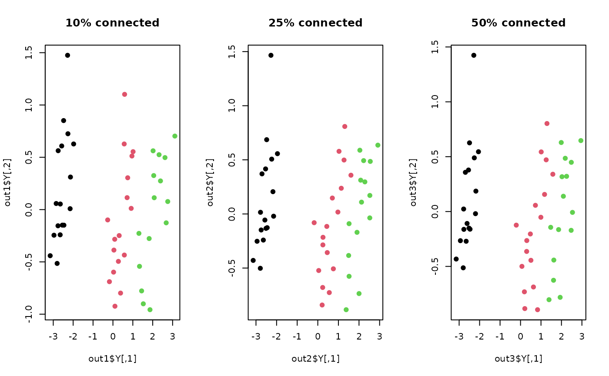

Curvilinear Distance Analysis (CRDA) is a variant of Curvilinear Component Analysis in that the input pairwise distance is altered by curvilinear distance on a data manifold. Like in Isomap, it first generates neighborhood graph and finds shortest path on a constructed graph so that the shortest-path length plays as an approximate geodesic distance on nonlinear manifolds.
do.crda(
X,
ndim = 2,
type = c("proportion", 0.1),
symmetric = "union",
weight = TRUE,
lambda = 1,
alpha = 1,
maxiter = 1000,
tolerance = 1e-06
)| X | an \((n\times p)\) matrix or data frame whose rows are observations and columns represent independent variables. |
|---|---|
| ndim | an integer-valued target dimension. |
| type | a vector of neighborhood graph construction. Following types are supported;
|
| symmetric | one of |
| weight |
|
| lambda | threshold value. |
| alpha | initial value for updating. |
| maxiter | maximum number of iterations allowed. |
| tolerance | stopping criterion for maximum absolute discrepancy between two distance matrices. |
a named list containing
an \((n\times ndim)\) matrix whose rows are embedded observations.
the number of iterations until convergence.
a list containing information for out-of-sample prediction.
Lee JA, Lendasse A, Verleysen M (2002). “Curvilinear Distance Analysis versus Isomap.” In ESANN.
Lee JA, Lendasse A, Verleysen M (2004). “Nonlinear Projection with Curvilinear Distances: Isomap versus Curvilinear Distance Analysis.” Neurocomputing, 57, 49--76.
Kisung You
## load iris data
data(iris)
set.seed(100)
subid = sample(1:150,50)
X = as.matrix(iris[subid,1:4])
label = as.factor(iris[subid,5])
## different settings of connectivity
out1 <- do.crda(X, type=c("proportion",0.10))
out2 <- do.crda(X, type=c("proportion",0.25))
out3 <- do.crda(X, type=c("proportion",0.50))
## visualize
opar <- par(no.readonly=TRUE)
par(mfrow=c(1,3))
plot(out1$Y, col=label, pch=19, main="10% connected")
plot(out2$Y, col=label, pch=19, main="25% connected")
plot(out3$Y, col=label, pch=19, main="50% connected")

par(opar)